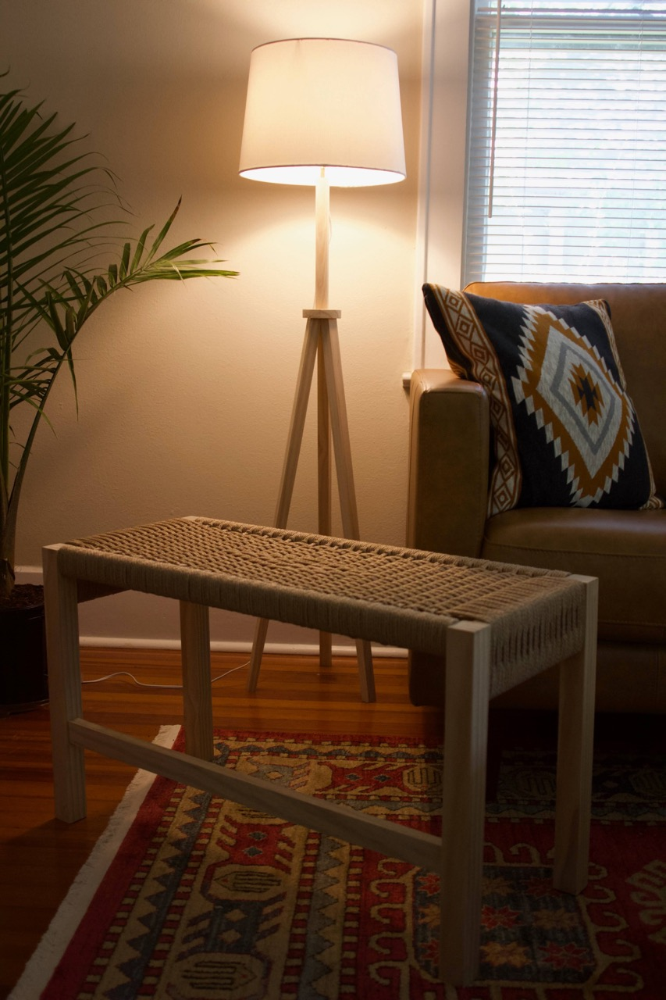
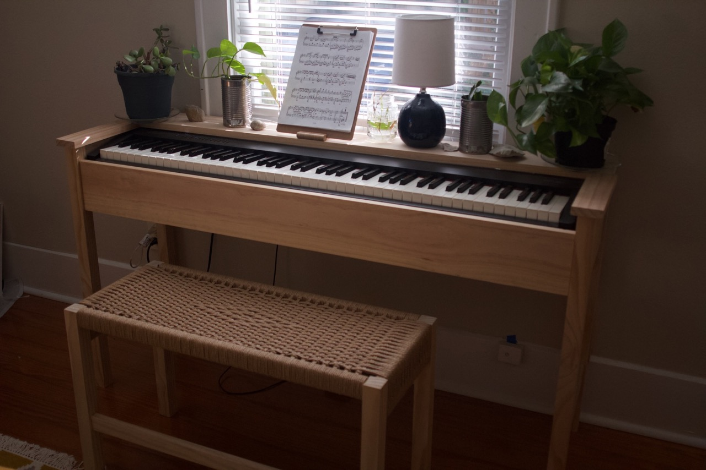

Piano Bench
Sunday 01, November 2020
Note: this post is backdated to reflect when the project was finished
 This was a follow up project to my piano stand. I was in need a better seat than my ikea chair.
The frame is made from pine and joined with dowels. The seat I wove in laced danish cording. When designing the bench I opted for a split rail on the two sides to avoid having to use l-nails or staples for wrapping the warp. The diamond pattern was a spur of the moment decision and thankfully I guessed the right time to do it so that it was centered across the depth of the seat. Weaving was a long and arduous process, my hands hurt for days after. But who can complain with the result?
